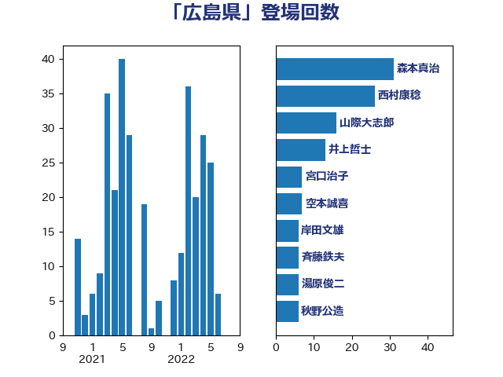

単語「広島県」

| 森本真治 | 立憲民主党 | 31 回 |
| 西村康稔 | 自由民主党 | 26 回 |
| 山際大志郎 | 自由民主党 | 16 回 |
| 井上哲士 | 日本共産党 | 13 回 |
| 宮口治子 | 立憲民主党 | 7 回 |
| 空本誠喜 | 日本維新の会 | 7 回 |
| 岸田文雄 | 自由民主党 | 6 回 |
| 斉藤鉄夫 | 公明党 | 6 回 |
| 湯原俊二 | 立憲民主党 | 6 回 |
| 秋野公造 | 公明党 | 6 回 |
| 岸信夫 | 自由民主党 | 5 回 |
| 平口洋 | 自由民主党 | 5 回 |
| 後藤茂之 | 自由民主党 | 5 回 |
| 日下正喜 | 公明党 | 4 回 |
| 田村智子 | 日本共産党 | 4 回 |
| 石橋林太郎 | 自由民主党 | 4 回 |
| 辻元清美 | 立憲民主党 | 4 回 |
| 佐藤公治 | 立憲民主党 | 3 回 |
| 小泉進次郎 | 自由民主党 | 3 回 |
| 山井和則 | 立憲民主党 | 3 回 |
| 川田龍平 | 立憲民主党 | 3 回 |
| 田村憲久 | 自由民主党 | 3 回 |
| 芳賀道也 | 国民民主党 | 3 回 |
| 阿部知子 | 立憲民主党 | 3 回 |
| 伊藤岳 | 日本共産党 | 2 回 |
| 務台俊介 | 自由民主党 | 2 回 |
| 塩川鉄也 | 日本共産党 | 2 回 |
| 塩村あやか | 立憲民主党 | 2 回 |
| 寺田静 | 無所属 | 2 回 |
| 徳永エリ | 立憲民主党 | 2 回 |
| 横沢高徳 | 立憲民主党 | 2 回 |
| 玉木雄一郎 | 国民民主党 | 2 回 |
| 石井章 | 日本維新の会 | 2 回 |
| 菅義偉 | 自由民主党 | 2 回 |
| 赤池誠章 | 自由民主党 | 2 回 |
| 高橋光男 | 公明党 | 2 回 |
| 高見康裕 | 自由民主党 | 2 回 |
| 井坂信彦 | 立憲民主党 | 1 回 |
| 伊藤俊輔 | 立憲民主党 | 1 回 |
| 倉林明子 | 日本共産党 | 1 回 |
| 吉川赳 | 無所属 | 1 回 |
| 吉良よし子 | 日本共産党 | 1 回 |
| 國場幸之助 | 自由民主党 | 1 回 |
| 太田房江 | 自由民主党 | 1 回 |
| 室井邦彦 | 日本維新の会 | 1 回 |
| 宮内秀樹 | 自由民主党 | 1 回 |
| 宮本周司 | 自由民主党 | 1 回 |
| 小宮山泰子 | 立憲民主党 | 1 回 |
| 小島敏文 | 自由民主党 | 1 回 |
| 小池晃 | 日本共産党 | 1 回 |
| 山下芳生 | 日本共産党 | 1 回 |
| 山口壯 | 自由民主党 | 1 回 |
| 山本博司 | 公明党 | 1 回 |
| 山東昭子 | 自由民主党 | 1 回 |
| 山田勝彦 | 立憲民主党 | 1 回 |
| 岩渕友 | 日本共産党 | 1 回 |
| 平木大作 | 公明党 | 1 回 |
| 志位和夫 | 日本共産党 | 1 回 |
| 打越さく良 | 立憲民主党 | 1 回 |
| 木村英子 | れいわ新選組 | 1 回 |
| 末松信介 | 自由民主党 | 1 回 |
| 東国幹 | 自由民主党 | 1 回 |
| 柳ヶ瀬裕文 | 日本維新の会 | 1 回 |
| 比嘉奈津美 | 自由民主党 | 1 回 |
| 泉健太 | 立憲民主党 | 1 回 |
| 浅野哲 | 国民民主党 | 1 回 |
| 清水貴之 | 日本維新の会 | 1 回 |
| 田村まみ | 国民民主党 | 1 回 |
| 畦元将吾 | 自由民主党 | 1 回 |
| 石垣のりこ | 立憲民主党 | 1 回 |
| 笠井亮 | 日本共産党 | 1 回 |
| 舞立昇治 | 自由民主党 | 1 回 |
| 舩後靖彦 | れいわ新選組 | 1 回 |
| 茂木敏充 | 自由民主党 | 1 回 |
| 萩生田光一 | 自由民主党 | 1 回 |
| 赤嶺政賢 | 日本共産党 | 1 回 |
| 近藤和也 | 立憲民主党 | 1 回 |
| 里見隆治 | 公明党 | 1 回 |
| 重徳和彦 | 立憲民主党 | 1 回 |
| 階猛 | 立憲民主党 | 1 回 |
| 須藤元気 | 無所属 | 1 回 |